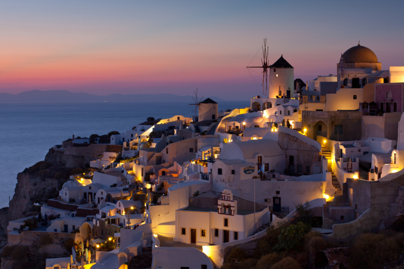

Захід на Санторіні
Одним з основних визначних пам'яток острова є його знаменитий захід, який настільки красивий, що на все життя залишить незабутнє враження у вашій пам'яті.Я спостерігала захід з майданчика села Ія. Не турбуйтеся, якщо у вас немає можливості до неї доїхати: прекрасні краєвиди відкриваються і з міста Фіри, і села Імеровіглі, а до них дістатися набагато простіше.
"Наступна сторінка"